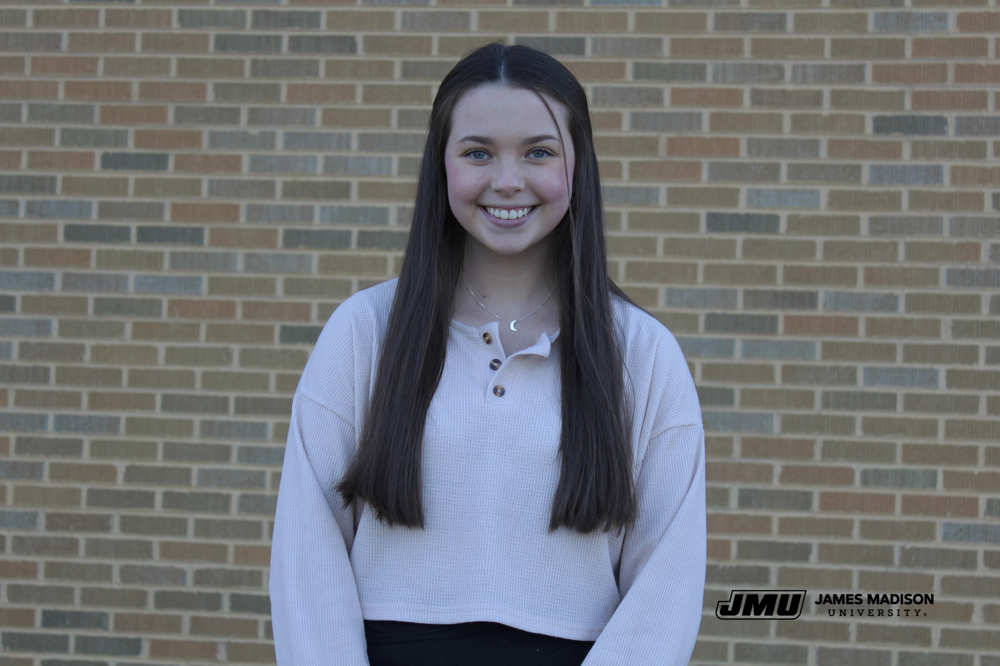

Contact Information: Phone: (540)316-8534 E-mail: amysheehan13@yahoo.com
James Madison University
Bachelor of Science
Major: Media Arts and Design
Minor: Educational Media
Graduation Date: May 2024
Panera Bread
Associate Trainer
July 2017-July 2021
Positions: Cashier, Food Prep
Duties: Taking orders, preparing food, cleaning
JMU: Community Service-Learning
Student Graphic Designer
August 2021-Present
Positions: Operations Coordinator, Graphic Designer
Duties: Creating marketing materials, updating website, tabling for events
James Madison University- Korbyt Training
Workplace Experience Platform
James Madison Cascade v8
Content Management System for JMU Websites
Responsible
Reliable
Detail Oriented
Dedicated
Good Communication Skills
James Madison University Dean's List: Spring 2022, Fall 2022